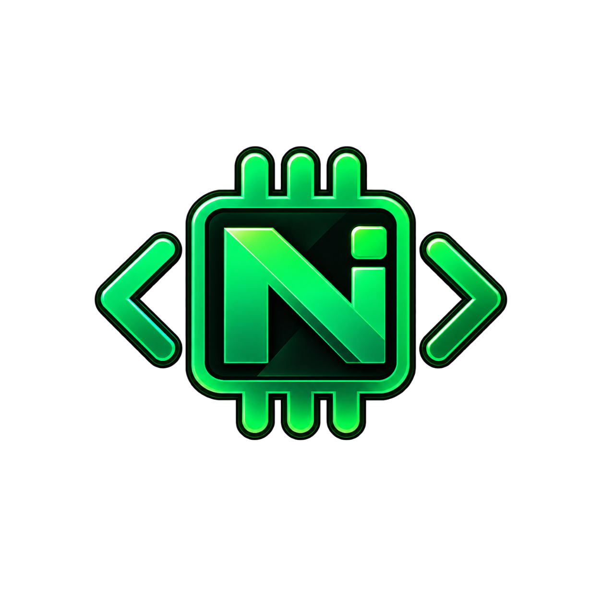

Transforme seu dispositivo em uma estação de trabalho. O Nativara IDE traz o poder do compilador Clang/LLVM para a palma da sua mão, sem depender de um PC.
Compilação real com o mesmo backend do Android NDK. Gere arquivos .so com performance máxima e sem depender de servidores externos.
Suporte nativo para as arquiteturas ARM64 (arm64-v8a) e ARM32 (armeabi-v7a). Um único clique para gerar binários compatíveis.
Syntax highlighting configurável via JSON, números de linha, fechamento automático e teclado otimizado que não cobre o código.
Interface 100% focada no código. Tela cheia, sem barras de navegação, com tela sempre ligada e suporte a Notch (Edge-to-Edge).
Clone repositórios diretamente pelo app, gerencie projetos e explore arquivos em uma árvore de diretórios intuitiva.
Acompanhe o output do compilador instantaneamente. O terminal integrado exibe erros, avisos e o tempo de build.